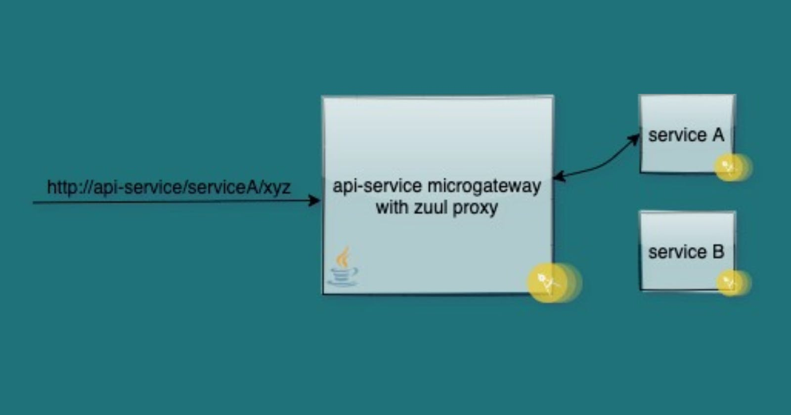

API-microgateway service using Netflix Zuul on Java
How to write an api-service or edge-service or api-gateway?

So we are here today to write a gateway microservice using Springboot framework, Netflix's Zuul library, and our never-getting-old programming language Java. As a part of this development, we will be using Gradle to build this together and prepare the Docker image out of it.
If you are not sure yet, what this api-service is going to help you with, I recommend reading out What is api-microgateway?.
- First create a Gradle project in your favorite IDE.
- Update the build.gradle file with following settings -
plugins {
id 'org.springframework.boot' version '2.3.3.RELEASE'
id 'java'
id 'application'
}
apply plugin: 'io.spring.dependency-management'
dependencies {
implementation 'org.springframework.boot:spring-boot-starter-web'
implementation 'org.springframework.cloud:spring-cloud-starter-netflix-zuul'
}
- Refresh your Gradle project to download the defined dependencies from their respective repository.
- Update your main class of the Java application with SpringBoot and Zuul Annotation as below -
@EnableZuulProxy
@SpringBootApplication
public class ApplicationEntryPoint {
public static void main(String[] args) {
SpringApplication.run(ApplicationEntryPoint.class, args);
}
}
Now your basic api-gateway is ready to serve but needs to be configured with routing settings.
Edge Service or Routing Endpoint
To set up routes, we will modify the application.yaml file which is responsible for helping our spring boot application in reading the dynamic configs.
- Update settings in your application.properties or application.yaml as follows -
spring:
application:
name: api-service
server:
port: 8080
zuul:
routes:
example:
url: https://example.com
ribbon:
eureka:
enabled: false
Here in the setting the child property under zuul.routes which is example is the URI path or say serviceId which is responsible for redirecting the request to the targeted endpoint that is mentioned as the value for url property.
Now you can run your spring-boot application and hit the localhost:8080/example on the browser.
So any request that we make after running our application and hitting the endpoint http://localhost:8080/example/xyz will send all requests and headers to downstream service at http://example.com/xyz
The response from the downstream service is then sent back and our api-service which in turn sends the response to the requesting client which will be your browser.
Security Filters or Request Filter
This is an add-on to your routing service where you can write a filter that can modify your headers or check for Authorization. Basically, any sanitization that needs to be done on the request before sending it further downstream can be applied here.
-
Create a new class RequestFilter.java and extend the abstract class ZuulFilter. As a part of your inherited behavior of ZuulFilter you will then need to override the below mentioned 4 methods :
shouldFilter() - responsible if you want to enable this filter or not.
run() - the logic on how what needs to be done with the request.
filterType() - evaluates when this filter need to be applied i.e. pre, post or route.
filterOrder() - if there are multiple filters operating, then on what order does it comes.
public class RequestFilter extends ZuulFilter {
@Override
public boolean shouldFilter() {
return true;
}
@Override
public Object run() throws ZuulException {
RequestContext ctx = RequestContext.getCurrentContext();
System.out.println("Requested Endpoint : " + ctx.getRequest().getRequestURI());
// all the logic goes here for request manipulation
return null;
}
@Override
public String filterType() {
return "pre";
}
@Override
public int filterOrder() {
return 5;
}
}
Your main application class needs to define the Bean for this request filter to help Zuul servlet chain the filter settings.
@EnableZuulProxy
@SpringBootApplication
public class ApplicationEntryPoint {
public static void main(String[] args) {
SpringApplication.run(ApplicationEntryPoint.class, args);
}
@Bean
RequestFilter getRequestFilterBean(){
return new RequestFilter();
}
Similarly you can create a response filter with filterType as Post and that can be used to manipulate the response from your downstream service before sending it back to your browser client.
A complete sample of this can be found on my git repository -> api-microgateway